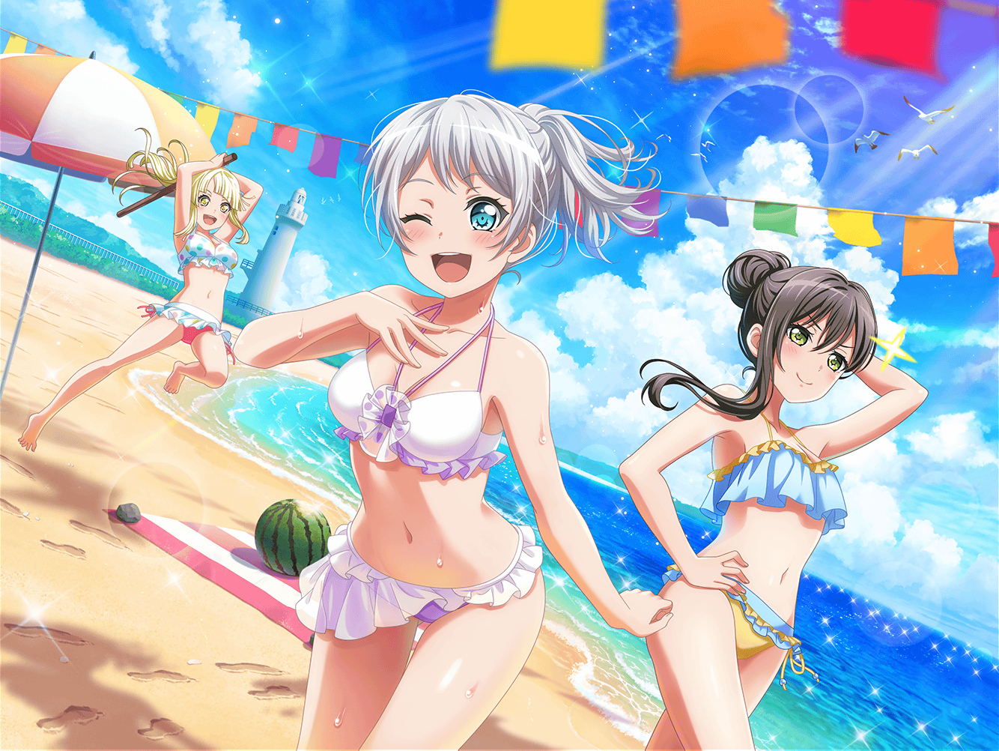

控室
イヴ
～♪
千聖
どうしたの、イヴちゃん？
なんだかご機嫌ね
イヴ
えへへ、わかりますか！
実は今度、海水浴に行くんです！
千聖
あら、素敵ね
麻弥
海ですか、いいですね～！
イヴ
はい、今からとっても楽しみです！
日菜
海かー、楽しそう！
ねえねえ、水着とか買うの？
イヴ
はい、新しいものを買おうと思っています！
なのでどんな水着にしようかな、って
いろんな雑誌を見ていました
彩
そっか、今月はどこも水着特集だもんね！
気に入ったのはあった？
イヴ
はい、３つほど気になる水着を見つけました！
でも、１つに決められなくて……
良かったらみなさんも、見てみてください！
彩
見たい見たい！
どれにしようと思ってるの？
イヴ
あ、はい！
このページの２つと、こっちの右上のなんですけど……
麻弥
どれもみんなかわいいですね……
確かにこれは迷っちゃいそうです！
彩
うーん……私的にはこれかな！
イヴちゃんには絶対似合うと思うよ！
千聖
あら、彩ちゃんも？
私もこれが１番いいと思ったわ
イヴ
そ、そうでしょうか……
私には、少し大人っぽいような気もするのですが……
千聖
そんなことないわよ。
イヴちゃんならきっと似合うと思うわ
日菜
うんうん、あたしもこれがるんっ♪ ときた！
ね、麻弥ちゃん？
麻弥
はい！
ジブンも、とてもかわいいと思います！
イヴ
みなさん……！
はい！ 私、この水着にしたいと思います！
イヴ
みなさん、ありがとうございます。
これで海水浴の準備は、バッチリです！
千聖
ちょっと待って、イヴちゃん。
他の準備は終わっているの？
イヴ
他の……ですか？
千聖
もう、イヴちゃん。
夏の海では、日焼け対策がとっても重要なのよ？
イヴ
ああ！ 日焼け止めですね！
もちろんちゃんと用意していますよ、ほら！
千聖
イヴちゃん……夏の日差しを甘く見てはいけないわ。
それに海にも入るんでしょう？
水に濡れても落ちにくいものにした方がいいわ
千聖
もしよかったら、私の日焼け止めを分けてあげるわ。
はい、これ。絶対日焼けしたくないときに使ってね
イヴ
えっ！
そんな、私がもらってしまっていいのでしょうか？
千聖
いいのよ、これは予備だから。
気にせず、使ってくれるとうれしいわ
彩
あ、それ、私も千聖ちゃんに教えてもらったけど、
本当に焼けないからオススメだよ！
イヴ
そうなんですね、ありがとうございます！
大切に使います！
千聖
大切に使ってくれるのはうれしいけど、
こまめに塗るようにね？
彩
そうだ！ それじゃあ私は、
最高の自撮りを撮るコツを教えてあげるね！
海なら絶対写真撮ると思うし！
イヴ
本当ですか！？
ぜひ教えてください！
彩
たとえば、ちょっと目線をずらしたりするの。
自撮りだと、カメラ目線ってインパクトが強すぎる気がしない？
イヴ
確かに！
言われてみれば、そうかもしれません！
彩
でしょ？
だからね、こうやって腕を伸ばして、
自分の指を見るような感じで……
イヴ
は、はい！
目線をずらして……
彩
あ！
あと、角度も大事だよ！
撮るときは、絶対ちょっと上からだからね！
イヴ
なるほど！
こう……でしょうか？
彩
うんうん！ イヴちゃん上手！
そんな感じだよ！
イヴ
ありがとうございます、アヤさん！
海でたくさん自撮りして、お見せしますね！
麻弥
そうだ、イヴさん。
水分をとるのも忘れないでくださいね！
熱中症は怖いですから！
イヴ
わ、わかりました！
たくさんお水を飲みます！
麻弥
はい。そして、頭がぼーっとしたらすぐ休んでください。
それから、怪我にも気を付けて。
消毒薬や絆創膏を持っていくと安心ですよ！
日菜
なになに、みんなでイヴちゃんにアドバイス？
それじゃあ、あたしからは泳ぎの極意を伝授しよっかな！
イヴ
極意……！
聞かせてください、ヒナさん！
日菜
あ、でもね、すっごい簡単なんだ。
足を軽くトンってして、腕をピッとやったら、
あとは普通にスイスイ～ってなるし
イヴ
え、ええと……
千聖
ちょっと日菜ちゃん、
それじゃイヴちゃんも、わからないんじゃないかしら？
イヴ
だ、大丈夫です！
トン、ピッ、スイスイ～ですね！
私、きっと極意をモノにします！
日菜
うん！
イヴちゃんならきっと大丈夫だよ～
イヴ
はい！
みなさん、本当にありがとうございます！ えへへ
日菜
イヴちゃん、どうしたの～？
ニコニコしちゃって～
イヴ
いえ、私は本当にみなさんに支えてもらっているなあって。
私、みなさんのことが大好きです！
日菜
あはは、いきなりどうしたのー？
変なイヴちゃん！
千聖
もう、日菜ちゃんってば茶化さないの
彩
イヴちゃん、いっぱい楽しんできてね！
麻弥
気をつけてくださいね。
いい思い出をたくさん作ってきてください！
イヴ
はい、ありがとうございます！
おみやげを楽しみにしていてくださいね！